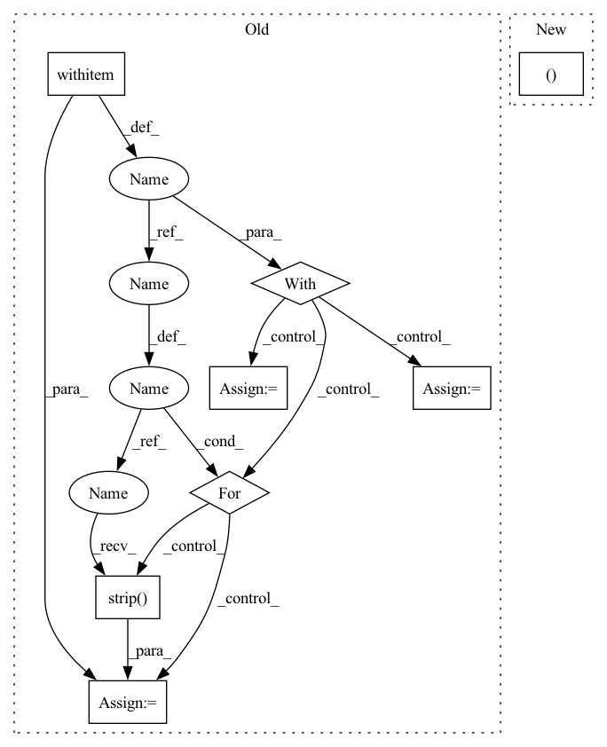

Pattern ID :21224

Before Change
_catid2clsid = {}
_clsid2catid = {}
_clsid2cname = {}
with open(train_path, "r", encoding="utf-8") as f2:
dataset_text = ""
for line in f2:
line = line.strip()
dataset_text += line
eval_dataset = json.loads(dataset_text)
categories = eval_dataset["categories"]
for clsid, cate_dic in enumerate(categories):
catid = cate_dic["id"]
cname = cate_dic["name"]
_catid2clsid[catid] = clsid
_clsid2catid[clsid] = catid
_clsid2cname[clsid] = cname
class_names = []
num_classes = len(_clsid2cname.keys())
After Change
train_pre_path = os.path.join(self.data_dir, self.name)
// 种类id
_catid2clsid, _clsid2catid, _clsid2cname, class_names = get_class_msg(train_path)
train_dataset = COCO(train_path)
train_img_ids = train_dataset.getImgIds()
In pattern: SUPERPATTERN
Frequency: 3
Non-data size: 8
Instances
Fragment ID: 67867275
Project Name: miemie2013/miemiedetection
Commit Name: a5dd8c31e9edef5be2b76cece461f06a9d7d23b5
Time: 2021-12-21
Author: 53960695+miemie2013@users.noreply.github.com
File Name: mmdet/data/datasets/coco.py
M Class Name: PPYOLO_COCOTrainDataset
N Class Name: PPYOLO_COCOTrainDataset
M Method Name: __init__(10)
N Method Name: __init__(10)
M Parent Class: torch.utils.data.Dataset
N Parent Class: torch.utils.data.Dataset
M File Name: mmdet/data/datasets/coco.py
N File Name: mmdet/data/datasets/coco.py
M Start Line: 379
M End Line: 404
N Start Line: 380
N End Line: 442
'>
Before Change
_catid2clsid = {}
_clsid2catid = {}
_clsid2cname = {}
with open(val_path, "r", encoding="utf-8") as f2:
dataset_text = ""
for line in f2:
line = line.strip()
dataset_text += line
eval_dataset = json.loads(dataset_text)
categories = eval_dataset["categories"]
for clsid, cate_dic in enumerate(categories):
catid = cate_dic["id"]
cname = cate_dic["name"]
_catid2clsid[catid] = clsid
_clsid2catid[clsid] = catid
_clsid2cname[clsid] = cname
class_names = []
num_classes = len(_clsid2cname.keys())
After Change
val_pre_path = os.path.join(self.data_dir, self.name)
// 种类id
_catid2clsid, _clsid2catid, _clsid2cname, class_names = get_class_msg(val_path)
val_dataset = COCO(val_path)
val_img_ids = val_dataset.getImgIds()
'>
Fragment ID: 67867402
Project Name: miemie2013/miemiedetection
Commit Name: a5dd8c31e9edef5be2b76cece461f06a9d7d23b5
Time: 2021-12-21
Author: 53960695+miemie2013@users.noreply.github.com
File Name: mmdet/data/datasets/coco.py
M Class Name: PPYOLO_COCOEvalDataset
N Class Name: PPYOLO_COCOEvalDataset
M Method Name: __init__(7)
N Method Name: __init__(7)
M Parent Class: torch.utils.data.Dataset
N Parent Class: torch.utils.data.Dataset
M File Name: mmdet/data/datasets/coco.py
N File Name: mmdet/data/datasets/coco.py
M Start Line: 302
M End Line: 327
N Start Line: 326
N End Line: 330
'>
Before Change
_catid2clsid = {}
_clsid2catid = {}
_clsid2cname = {}
with open(train_path, "r", encoding="utf-8") as f2:
dataset_text = ""
for line in f2:
line = line.strip()
dataset_text += line
eval_dataset = json.loads(dataset_text)
categories = eval_dataset["categories"]
for clsid, cate_dic in enumerate(categories):
catid = cate_dic["id"]
cname = cate_dic["name"]
_catid2clsid[catid] = clsid
_clsid2catid[clsid] = catid
_clsid2cname[clsid] = cname
class_names = []
After Change
train_pre_path = os.path.join(self.data_dir, self.name)
// 种类id
_catid2clsid, _clsid2catid, _clsid2cname, class_names = get_class_msg(train_path)
train_dataset = COCO(train_path)
train_img_ids = train_dataset.getImgIds()
'>
Fragment ID: 67867267
Project Name: miemie2013/miemiedetection
Commit Name: a5dd8c31e9edef5be2b76cece461f06a9d7d23b5
Time: 2021-12-21
Author: 53960695+miemie2013@users.noreply.github.com
File Name: mmdet/data/datasets/coco.py
M Class Name: PPYOLO_COCOTrainDataset
N Class Name: PPYOLO_COCOTrainDataset
M Method Name: __init__(10)
N Method Name: __init__(10)
M Parent Class: torch.utils.data.Dataset
N Parent Class: torch.utils.data.Dataset
M File Name: mmdet/data/datasets/coco.py
N File Name: mmdet/data/datasets/coco.py
M Start Line: 379
M End Line: 404
N Start Line: 380
N End Line: 442
'>
Before Change
import pkg_resources
with requirements_file.open() as requirements:
install_options = []
install_reqs = []
for req in requirements:
req = req.strip()
if (not req) or req.startswith("//"):
continue
elif req.startswith("-"):
install_options.extend(req.split(" "))
After Change
if is_requirements_installed(requirements_file):
return
install_reqs, install_options = _get_install_options(requirements_file)
subprocess.check_call(
[
'>
Fragment ID: 67867207
Project Name: jina-ai/jina
Commit Name: bdb867c2cce340f94e3d65936ea95e35afd0ddc9
Time: 2021-11-04
Author: artex.xh@gmail.com
File Name: jina/hubble/helper.py
M Class Name: AnonimousClass
N Class Name: AnonimousClass
M Method Name: install_requirements(2)
N Method Name: install_requirements(3)
M Parent Class:
N Parent Class:
M File Name: jina/hubble/helper.py
N File Name: jina/hubble/helper.py
M Start Line: 344
M End Line: 373
N Start Line: 379
N End Line: 379